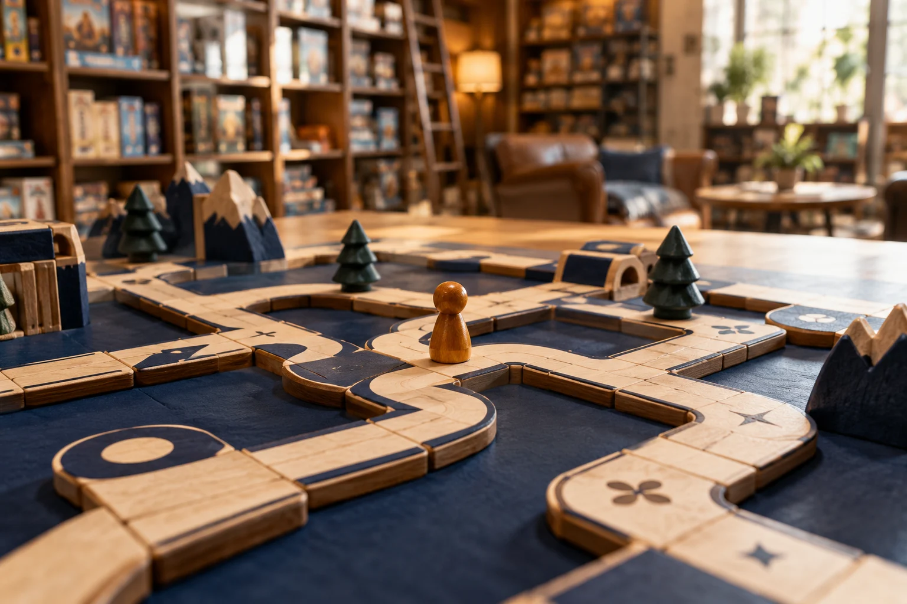

A little off the board.
The page you are looking for has moved or does not exist. Let us help you find your way back to the table.

There is always another way to play.
A fresh discovery is just one move away.
The page you are looking for has moved or does not exist. Let us help you find your way back to the table.

A fresh discovery is just one move away.